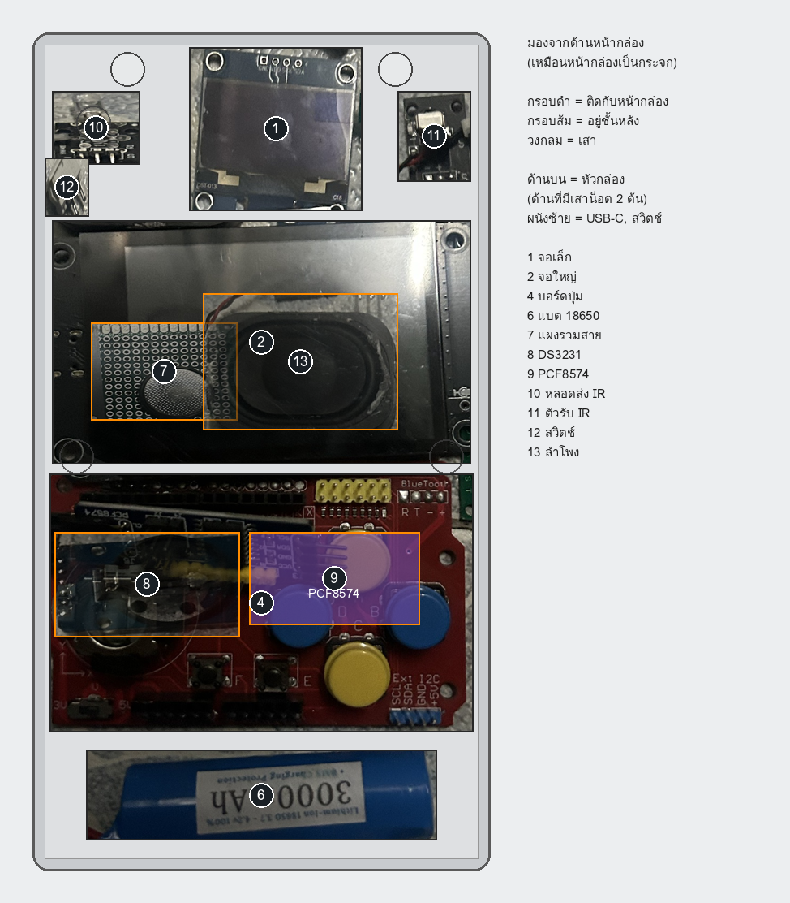
ตัวเลขตำแหน่ง: x วัดจากขอบซ้าย y วัดจากขอบบน ของหน้ากล่องด้านนอก (มม.)
ด้านบน = หัวกล่อง ด้านที่มีเสาน็อต 2 ต้น · ผนังซ้าย = ช่อง USB-C และสวิตช์
ลึก = ระยะจากผิวนอกหน้ากล่องเข้าไปในกล่อง
ตอนประกอบ ซีกหน้าจะคว่ำอยู่บนโต๊ะ และเรามองจากด้านใน: ซ้าย–ขวาจะกลับกับรูปบน ผนังที่มีช่อง USB-C จะอยู่ทางขวามือ ใช้ช่อง USB-C เป็นหลักจำทิศ
DRILL_BOX4.md ให้เสร็จก่อน (ยกเว้นช่องสวิตช์ ซึ่งรอย้ายตำแหน่งหนีเขี้ยวล็อก)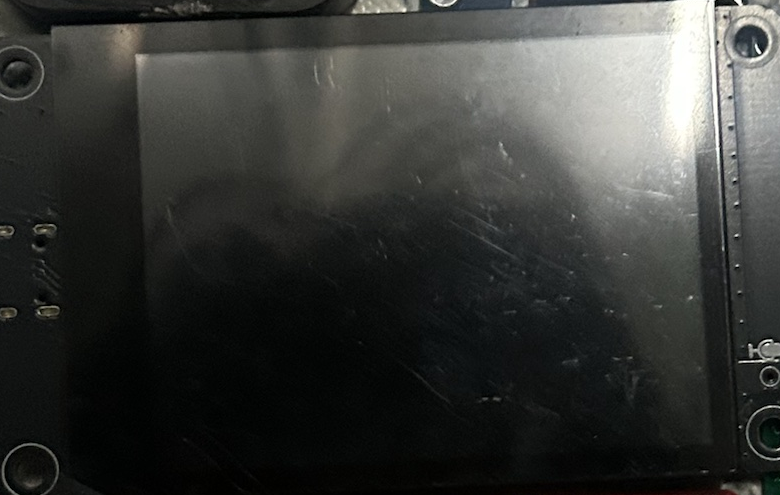
x 47, y 63.5 ขอบบนบอร์ดห่างจอเล็ก 2 มม.(8, 42.5) (8, 84.5) (86, 42.5) (86, 84.5) → เสารอง 4.5 มม. → รูบอร์ด → ขันเข้าเสาทองเหลืองเดิมของจอ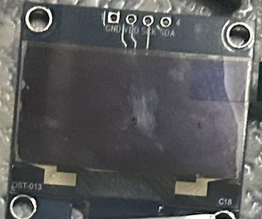
x 50.1, y 19.8 ตรงกลางภาพจอใหญ่พอดี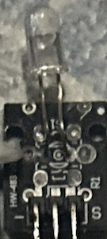
x 13, y 19.5x 9 (ซ้ายของเสา)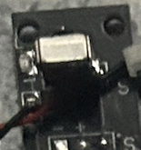
x 82.5, y 21.2x 82.5 (ขวาของเสา) ถ้าตัวรับนอนอยู่บนบอร์ด ให้งอขาตัวรับ 90° ให้หน้าเลนส์หันไปทางผนังบน · ขา S / + / − หันลงหาจอใหญ่ยังไม่แน่ใจว่าโมดูลไหนในรูปคือตัวรับ: ตัวรับคือตัวที่ไม่มีหลอดใส (ชิ้นดำ มีหน้าต่าง) ถ้าสายแดงดำของลำโพงเสียบอยู่กับมัน ให้ถอดออก
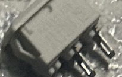
y 25.7–37.7 ห่างหน้ากล่อง 9 มม.ช่องนี้ทับเขี้ยวล็อกของกล่อง ยังไม่ต้องเจาะ รอวัดตำแหน่งเขี้ยว แล้วผมจะย้ายให้
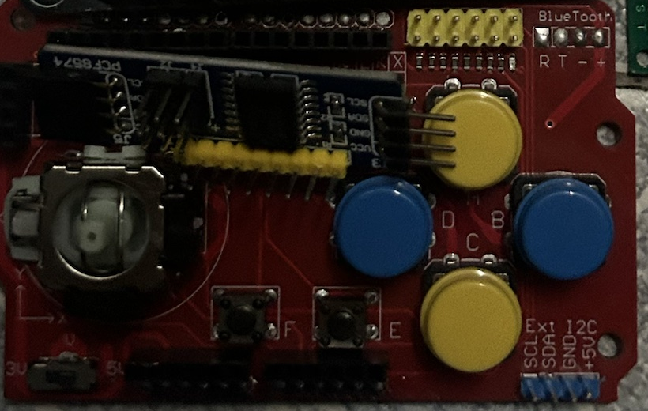
x 47, y 117(7.7, 93) (86.3, 108) + เสารอง 10 มม. → ปุ่มสีโผล่ราว 2 มม. จอยโผล่ราว 18 มม.wiring_v12.png แล้ว ใช้ตามนั้น)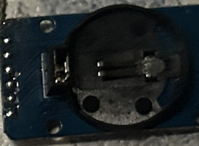
x 23.5, y 113x 62, y 112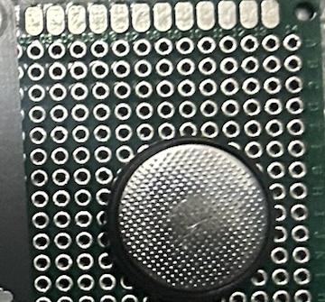
hub_board.png)x 27, y 69.5 ข้างแผ่นโฟมลำโพง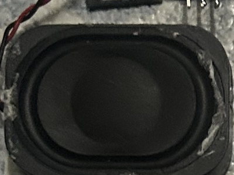
x 55, y 67.5 ตรงรูเสียง 15 รูของซีกหลัง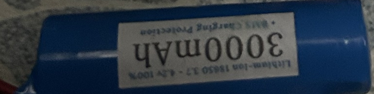
x 47, y 156.5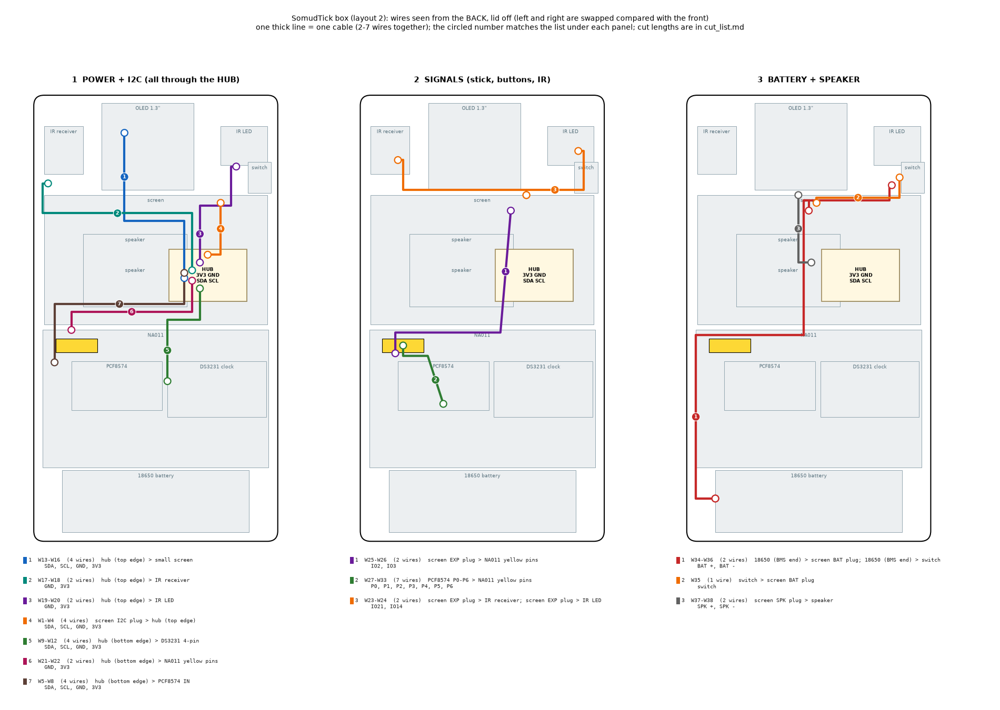
สีที่แนะนำ: 3V3 แดง · GND ดำ · SDA น้ำเงิน · SCL เหลือง · IR ส้ม · จอย ม่วง · ปุ่ม เขียว
| สาย | จาก | ถึง | สัญญาณ | ขนาด | ตัดยาว มม. |
|---|---|---|---|---|---|
| W1–W4 | จอใหญ่ ปลั๊ก I2C | แผงรวมสาย ขอบบน | SDA · SCL · GND · 3V3 | 28 | 55 |
| W5–W8 | แผงรวมสาย ขอบล่าง | PCF8574 ขา IN | SDA · SCL · GND · 3V3 | 28 | 130 |
| W9–W12 | แผงรวมสาย ขอบล่าง | DS3231 | SDA · SCL · GND · 3V3 | 28 | 95 |
| W13–W16 | แผงรวมสาย ขอบบน | จอเล็ก | SDA · SCL · GND · 3V3 | 28 | 115 |
| W17–W18 | แผงรวมสาย ขอบบน | KY-022 ตัวรับ | GND · 3V3 | 28 | 130 |
| W19–W20 | แผงรวมสาย ขอบบน | KY-005 หลอดส่ง | GND · 3V3 | 28 | 85 |
| W21–W22 | แผงรวมสาย ขอบล่าง | บอร์ดปุ่ม | GND · 3V3 | 28 | 95 |
| W23 | จอใหญ่ ปลั๊กขยาย IO21 | KY-005 ขา S | ยิงรีโมท | 28 | 70 |
| W24 | จอใหญ่ ปลั๊กขยาย IO14 | KY-022 ขา S | รับรีโมท | 28 | 90 |
| W25–W26 | จอใหญ่ ปลั๊กขยาย IO2 / IO3 | บอร์ดปุ่ม X / Y | แกนจอย | 28 | 130 |
| W27–W33 | PCF8574 P0–P6 | ปุ่ม A B C D E F K | ปุ่ม 7 ปุ่ม | 28 | 80 |
| W34 | แบต + (ปลาย BMS) | สวิตช์ | ไฟแบต | 24 | 250 |
| W35 | สวิตช์ | จอใหญ่ ปลั๊กแบต + | ไฟแบต | 24 | 70 |
| W36 | แบต − | จอใหญ่ ปลั๊กแบต − | กราวด์แบต | 24 | 220 |
| W37–W38 | จอใหญ่ ปลั๊กลำโพง | ลำโพง + / − | เสียง | 26 | 70 |
ความยาว = ทางเดินสายจริงในกล่อง + ปอกปลายละ 4 มม. + เผื่อ 15 มม. · ตำแหน่งปลั๊กหลังจอใหญ่ประมาณจากแบบผู้ผลิต อาจคลาด ±2 ซม. ดูชื่อบนบอร์ดจริงก่อน · ถ้าสายปลั๊กที่แถมมากับจอยาวพอ ต่อตรงเข้าโมดูลได้เลย
FIRMWARE v13.1 → Settings → About: Small screen 1.3 inch, Buttons OK (0x20), กดรีโมทแล้ว IR receiver เป็น OK